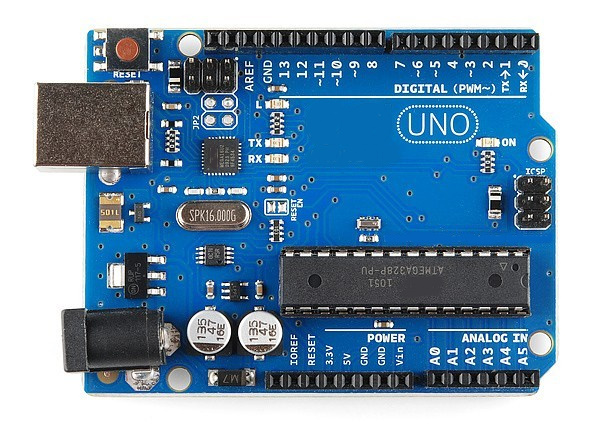
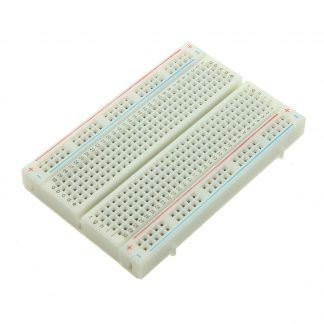
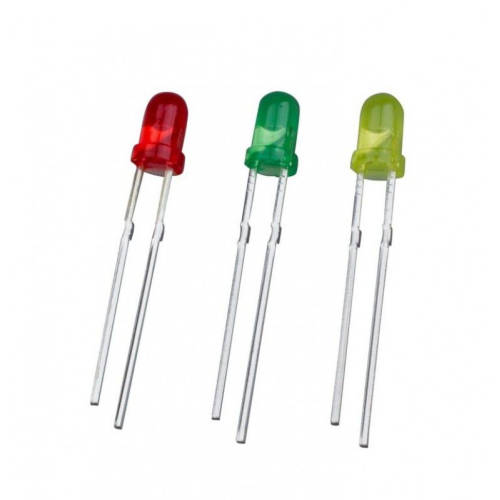
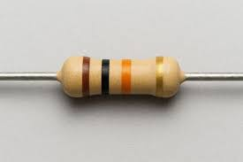
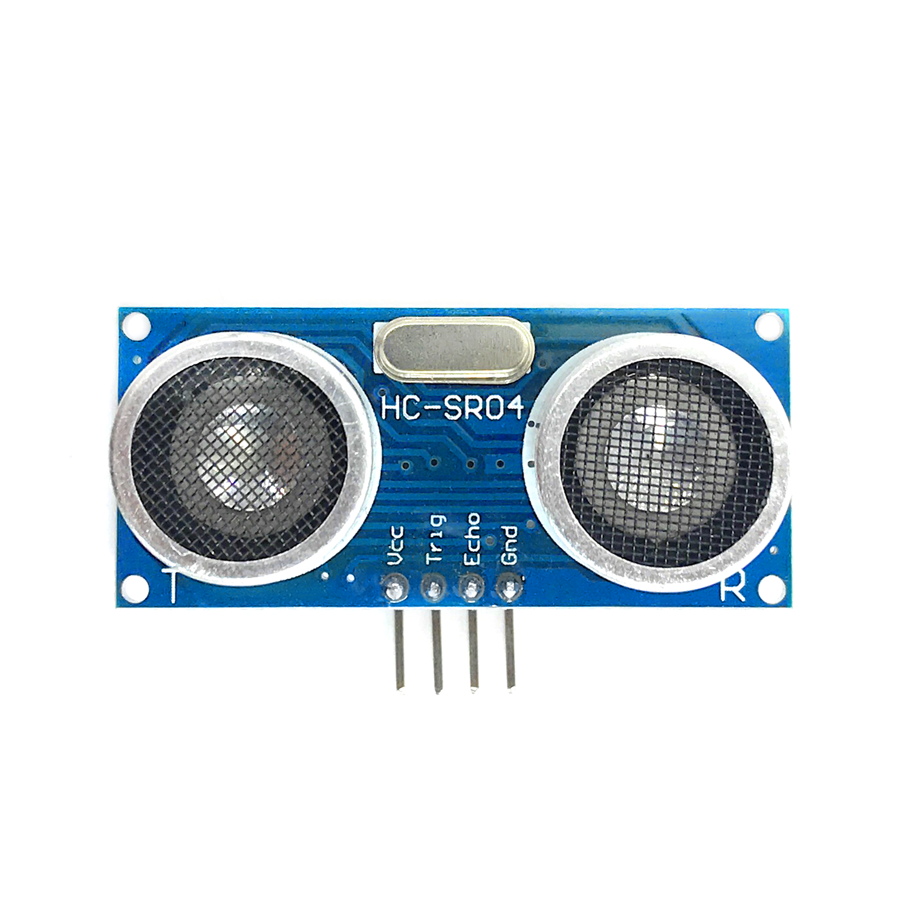
Sensor ultrasónico utilizado para medir distancias mediante ondas sonoras.
Simulación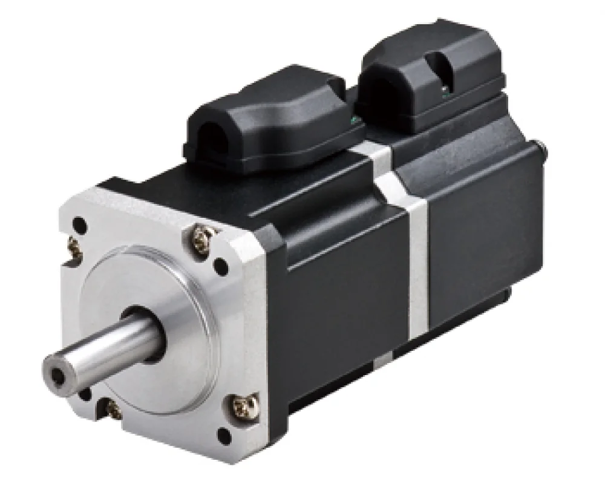
Motor de precisión capaz de posicionarse en ángulos específicos mediante señales PWM.
Simulación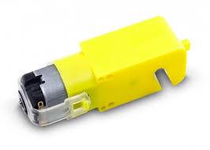
Motor eléctrico que transforma energía eléctrica en movimiento rotacional continuo.
Simulación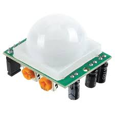
Sensor infrarrojo pasivo utilizado para detectar movimiento de personas u objetos.
Simulación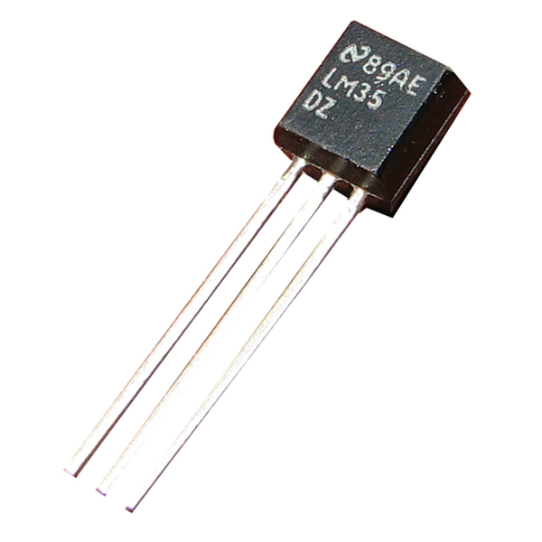
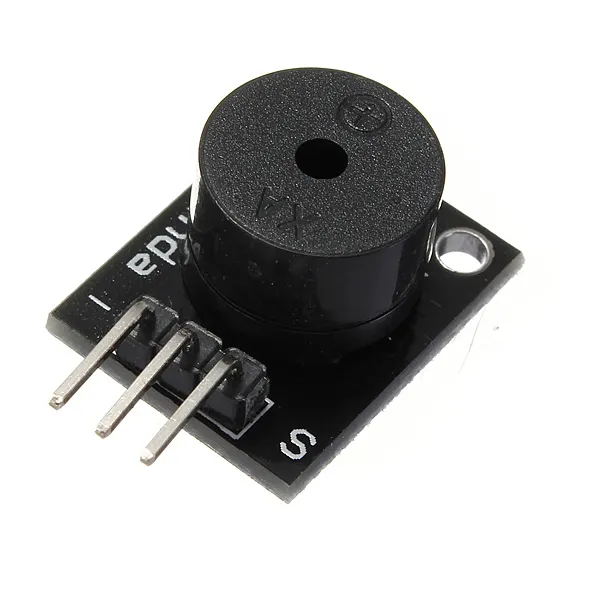
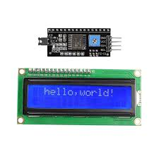
Pantalla utilizada para mostrar texto, valores de sensores y mensajes en proyectos electrónicos y robóticos.
Simulación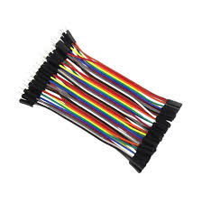
Conductores utilizados para conectar componentes electrónicos en protoboards y placas Arduino.
SimulaciónAccede al entorno de simulación para desarrollar circuitos, programar Arduino y realizar las prácticas del curso.
Abrir Tinkercad